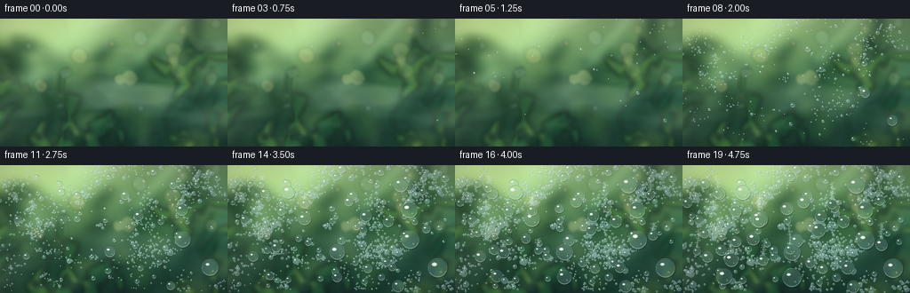
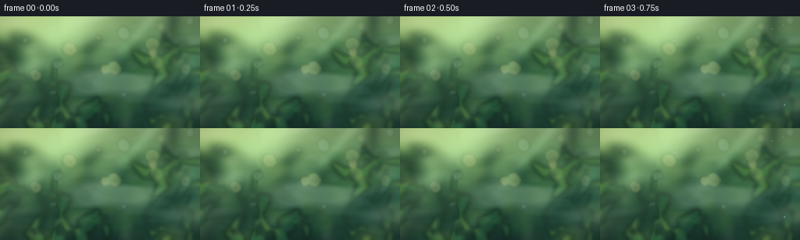

CODING AGENTS AS PIXEL WORLD MODELS
traex/DeepSeek-V4.1-Flash · phygen_105
点击播放 · 原生 RGB 像素
逐轮保存的候选
回放视频、检查图与代码变化。
每份候选均可单独播放。实际图片检查记录在下方工具轨迹中。
候选 01播放与检查图
点击播放 · 原生 RGB 像素

展开代码变化
--- 上一保存版本
+++ 本次保存版本
@@ -0,0 +1,751 @@
+"""Procedural condensation timelapse for the PixelWorld generation contract."""
+
+from __future__ import annotations
+
+import math
+from pathlib import Path
+
+import cv2
+import numpy as np
+from PIL import Image, ImageDraw, ImageFilter
+from scipy.ndimage import gaussian_filter
+
+import artifact_io
+
+
+OUT_W = 256
+OUT_H = 144
+FPS = 4.0
+FRAME_COUNT = 20
+SS = 4
+W = OUT_W * SS
+H = OUT_H * SS
+SEED = 105_019
+
+
+def smoothstep(edge0: float, edge1: float, value):
+ x = np.clip((value - edge0) / np.maximum(np.asarray(edge1) - np.asarray(edge0), 1e-6), 0.0, 1.0)
+ return x * x * (3.0 - 2.0 * x)
+
+
+def leaf_polygon(
+ center: tuple[float, float],
+ length: float,
+ width: float,
+ angle: float,
+ rng: np.random.Generator,
+ curl: float = 0.0,
+) -> list[tuple[float, float]]:
+ """Return a pointed, slightly irregular leaf silhouette."""
+ points = []
+ count = 13
+ for index in range(count):
+ u = -1.0 + 2.0 * index / (count - 1)
+ profile = max(0.0, 1.0 - u * u) ** 0.72
+ side = 1.0 if index < count // 2 else -1.0
+ jitter = 1.0 + rng.uniform(-0.08, 0.08)
+ local_x = u * length * 0.5
+ local_y = side * width * 0.5 * profile * jitter
+ local_y += curl * (u * u - 0.25) * width
+ ca, sa = math.cos(angle), math.sin(angle)
+ points.append(
+ (
+ center[0] + local_x * ca - local_y * sa,
+ center[1] + local_x * sa + local_y * ca,
+ )
+ )
+ return points
+
+
+def add_radial_light(
+ image: np.ndarray,
+ center: tuple[float, float],
+ radii: tuple[float, float],
+ color: tuple[float, float, float],
+ strength: float,
+) -> None:
+ yy, xx = np.mgrid[0:H, 0:W]
+ cx, cy = center[0] * W, center[1] * H
+ rx, ry = radii[0] * W, radii[1] * H
+ glow = np.exp(-(((xx - cx) / rx) ** 2 + ((yy - cy) / ry) ** 2) * 1.7)
+ image[:] += glow[..., None] * np.asarray(color, dtype=np.float32) * strength
+
+
+def make_background() -> Image.Image:
+ """A shallow-focus greenhouse interior, seen through the clear film."""
+ rng = np.random.default_rng(SEED + 1)
+ yy, xx = np.mgrid[0:H, 0:W]
+ yn = yy / (H - 1)
+ xn = xx / (W - 1)
+
+ top = np.array([111.0, 139.0, 92.0])
+ middle = np.array([47.0, 91.0, 59.0])
+ bottom = np.array([17.0, 39.0, 31.0])
+ first_mix = np.clip(yn / 0.58, 0.0, 1.0)[..., None]
+ second_mix = np.clip((yn - 0.45) / 0.55, 0.0, 1.0)[..., None]
+ image = top * (1.0 - first_mix) + middle * first_mix
+ image = image * (1.0 - second_mix) + bottom * second_mix
+
+ # Sunlit greenhouse glass on the left, with a cool bounce at the right edge.
+ add_radial_light(image, (0.08, 0.02), (0.52, 0.54), (98, 104, 61), 0.82)
+ add_radial_light(image, (0.73, 0.28), (0.44, 0.56), (20, 43, 28), 0.22)
+ add_radial_light(image, (0.94, 0.63), (0.26, 0.44), (7, 34, 30), 0.30)
+
+ far = Image.fromarray(np.clip(image, 0, 255).astype(np.uint8))
+ draw_far = ImageDraw.Draw(far, "RGBA")
+
+ # Structural greenhouse members remain soft, but establish the setting.
+ draw_far.line(
+ [(0.885 * W, -0.08 * H), (0.805 * W, 1.08 * H)],
+ fill=(15, 38, 31, 165),
+ width=int(0.052 * W),
+ )
+ draw_far.line(
+ [(0.905 * W, -0.08 * H), (0.825 * W, 1.08 * H)],
+ fill=(98, 124, 103, 65),
+ width=max(2, int(0.006 * W)),
+ )
+ draw_far.line(
+ [(-0.05 * W, 0.80 * H), (1.05 * W, 0.74 * H)],
+ fill=(20, 36, 28, 125),
+ width=int(0.038 * H),
+ )
+ draw_far.line(
+ [(-0.05 * W, 0.78 * H), (1.05 * W, 0.72 * H)],
+ fill=(150, 160, 121, 42),
+ width=max(2, int(0.007 * H)),
+ )
+
+ # Deep, out-of-focus foliage masses.
+ far_colors = [
+ (20, 57, 37, 190),
+ (33, 75, 43, 178),
+ (48, 91, 48, 158),
+ (70, 105, 55, 142),
+ (16, 49, 35, 190),
+ ]
+ for _ in range(42):
+ cx = rng.uniform(-0.08, 1.08) * W
+ cy = rng.uniform(0.18, 1.08) * H
+ size = rng.uniform(0.06, 0.20) * W
+ color = far_colors[int(rng.integers(len(far_colors)))]
+ points = leaf_polygon(
+ (cx, cy),
+ size * rng.uniform(1.2, 2.1),
+ size,
+ rng.uniform(-math.pi, math.pi),
+ rng,
+ rng.uniform(-0.18, 0.18),
+ )
+ draw_far.polygon(points, fill=color)
+
+ far = far.filter(ImageFilter.GaussianBlur(0.021 * W))
+
+ mid = Image.new("RGBA", (W, H), (0, 0, 0, 0))
+ draw_mid = ImageDraw.Draw(mid, "RGBA")
+ stems = [
+ ((-0.05, 0.93), (0.10, 0.62), (0.04, 0.35)),
+ ((0.97, 0.91), (0.87, 0.64), (0.93, 0.39)),
+ ((0.18, 1.04), (0.24, 0.73), (0.17, 0.52)),
+ ((0.78, 1.03), (0.73, 0.76), (0.80, 0.57)),
+ ]
+ for stem in stems:
+ draw_mid.line(
+ [(x * W, y * H) for x, y in stem],
+ fill=(42, 83, 48, 180),
+ width=int(0.010 * W),
+ joint="curve",
+ )
+
+ # Leaves are concentrated near the edges so droplets retain a quiet stage.
+ for _ in range(34):
+ side = rng.choice(["left", "right", "bottom"], p=[0.34, 0.34, 0.32])
+ if side == "left":
+ cx = rng.uniform(-0.02, 0.31) * W
+ cy = rng.uniform(0.35, 1.07) * H
+ elif side == "right":
+ cx = rng.uniform(0.73, 1.03) * W
+ cy = rng.uniform(0.24, 1.06) * H
+ else:
+ cx = rng.uniform(0.12, 0.92) * W
+ cy = rng.uniform(0.82, 1.10) * H
+ size = rng.uniform(0.035, 0.105) * W
+ palette = [
+ (43, 93, 49, 205),
+ (69, 117, 55, 195),
+ (31, 78, 44, 220),
+ (96, 132, 61, 168),
+ (19, 61, 39, 215),
+ ]
+ points = leaf_polygon(
+ (cx, cy),
+ size * rng.uniform(1.8, 2.9),
+ size,
+ rng.uniform(-math.pi, math.pi),
+ rng,
+ rng.uniform(-0.12, 0.12),
+ )
+ color = palette[int(rng.integers(len(palette)))]
+ draw_mid.polygon(points, fill=color)
+ # A single soft midrib catches the greenhouse light.
+ p0, p1 = points[1], points[-2]
+ draw_mid.line(
+ [p0, ((p0[0] + p1[0]) * 0.5, (p0[1] + p1[1]) * 0.5)],
+ fill=(164, 178, 112, 38),
+ width=max(1, int(0.0025 * W)),
+ )
+
+ mid = mid.filter(ImageFilter.GaussianBlur(0.010 * W))
+ far_rgba = far.convert("RGBA")
+ far_rgba.alpha_composite(mid)
+ image = np.asarray(far_rgba.convert("RGB"), dtype=np.float32)
+
+ # Broad highlights and bokeh add depth behind the condensation.
+ bokeh = Image.new("RGBA", (W, H), (0, 0, 0, 0))
+ draw_bokeh = ImageDraw.Draw(bokeh, "RGBA")
+ for _ in range(19):
+ cx = rng.uniform(0.02, 0.98) * W
+ cy = rng.uniform(0.02, 0.70) * H
+ radius = rng.uniform(0.008, 0.036) * W
+ warm = rng.random() < 0.62
+ color = (233, 218, 145, int(rng.uniform(28, 72))) if warm else (162, 208, 179, 45)
+ draw_bokeh.ellipse(
+ (cx - radius, cy - radius, cx + radius, cy + radius),
+ fill=color,
+ )
+ bokeh = bokeh.filter(ImageFilter.GaussianBlur(0.006 * W))
+ base = Image.fromarray(np.clip(image, 0, 255).astype(np.uint8)).convert("RGBA")
+ base.alpha_composite(bokeh)
+
+ arr = np.asarray(base.convert("RGB"), dtype=np.float32)
+ bloom_source = np.clip(arr - 166.0, 0.0, None)
+ bloom = cv2.GaussianBlur(bloom_source, (0, 0), 0.035 * W)
+ arr = 255.0 - (255.0 - arr) * (255.0 - bloom * 0.42) / 255.0
+ return Image.fromarray(np.clip(arr, 0, 255).astype(np.uint8))
+
+
+def make_plastic_overlay(rng: np.random.Generator) -> Image.Image:
+ """Faint creases and handling marks on the greenhouse film."""
+ overlay = Image.new("RGBA", (W, H), (0, 0, 0, 0))
+ draw = ImageDraw.Draw(overlay, "RGBA")
+ for _ in range(14):
+ x0 = rng.uniform(-0.05, 1.05) * W
+ y0 = rng.uniform(-0.08, 1.05) * H
+ length = rng.uniform(0.10, 0.48) * W
+ angle = rng.uniform(-0.28, 0.28) + (math.pi * 0.5 if rng.random() < 0.28 else 0.0)
+ bend = rng.uniform(-0.06, 0.06) * H
+ x1 = x0 + math.cos(angle) * length
+ y1 = y0 + math.sin(angle) * length
+ mx, my = (x0 + x1) * 0.5, (y0 + y1) * 0.5 + bend
+ points = []
+ for step in range(18):
+ u = step / 17.0
+ px = (1 - u) ** 2 * x0 + 2 * (1 - u) * u * mx + u * u * x1
+ py = (1 - u) ** 2 * y0 + 2 * (1 - u) * u * my + u * u * y1
+ points.append((px, py))
+ alpha = int(rng.uniform(7, 19))
+ draw.line(points, fill=(222, 241, 228, alpha), width=max(1, int(rng.uniform(1, 4))))
+ if rng.random() < 0.55:
+ shifted = [(x + 1.2, y + 1.0) for x, y in points]
+ draw.line(shifted, fill=(24, 56, 48, alpha // 2), width=1)
+ for _ in range(120):
+ x = rng.uniform(0, W)
+ y = rng.uniform(0, H)
+ length = rng.uniform(0.002, 0.018) * W
+ angle = rng.uniform(-0.3, 0.3)
+ draw.line(
+ [(x, y), (x + math.cos(angle) * length, y + math.sin(angle) * length)],
+ fill=(232, 246, 236, int(rng.uniform(5, 16))),
+ width=1,
+ )
+ return overlay.filter(ImageFilter.GaussianBlur(0.6))
+
+
+def warp_film(image: Image.Image, t: float) -> Image.Image:
+ """Subtle optical warp, tint, and moving sheen from the plastic sheet."""
+ arr = np.asarray(image, dtype=np.float32)
+ yy, xx = np.mgrid[0:H, 0:W].astype(np.float32)
+ yn, xn = yy / H, xx / W
+
+ # Large, soft folds plus one vertical wrinkle near the left third.
+ u = (
+ 1.1
+ + 2.2 * np.sin(2 * math.pi * (yn * 1.20 + 0.15))
+ + 0.8 * np.sin(2 * math.pi * (xn * 2.10 - yn * 0.55))
+ )
+ v = (
+ 0.6
+ + 1.5 * np.sin(2 * math.pi * (xn * 1.45 - 0.20))
+ + 0.55 * np.sin(2 * math.pi * (yn * 2.40 + xn * 0.35))
+ )
+ wrinkle_x = 0.285 + 0.010 * np.sin(2 * math.pi * (yn * 2.8 - 0.1))
+ wrinkle = np.exp(-((xn - wrinkle_x) / 0.016) ** 2)
+ u += wrinkle * 5.0 * np.sin(2 * math.pi * (yn * 2.25 + 0.10))
+ v += wrinkle * 1.2 * np.cos(2 * math.pi * (yn * 1.4))
+
+ map_x = (xx + u * SS).astype(np.float32)
+ map_y = (yy + v * SS).astype(np.float32)
+ warped = cv2.remap(
+ arr,
+ map_x,
+ map_y,
+ interpolation=cv2.INTER_CUBIC,
+ borderMode=cv2.BORDER_REFLECT_101,
+ )
+
+ # A cool film tint preserves the green scene while cooling the surface.
+ tint = np.array([147.0, 190.0, 181.0], dtype=np.float32)
+ warped = warped * 0.935 + tint * 0.065
+
+ # Broad diagonal reflection, with a second narrow streak.
+ diag = (xn * 0.68 + yn * 0.32)
+ sheen = np.exp(-((diag - 0.27) / 0.095) ** 2)
+ sheen += 0.55 * np.exp(-((diag - 0.52) / 0.024) ** 2)
+ sheen *= 0.72 + 0.28 * np.sin(2 * math.pi * (yn * 0.8 + 0.2))
+ warped += sheen[..., None] * np.array([30.0, 36.0, 31.0])
+
+ # Very low-frequency milkiness makes the film feel physical, not glass.
+ low = cv2.resize(
+ gaussian_filter(np.random.default_rng(SEED + 5).normal(size=(24, 42)), 2.4),
+ (W, H),
+ interpolation=cv2.INTER_CUBIC,
+ )
+ low = (low - low.min()) / (low.max() - low.min() + 1e-6)
+ warped += (low[..., None] - 0.5) * 10.0
+ return Image.fromarray(np.clip(warped, 0, 255).astype(np.uint8))
+
+
+def build_mist_textures():
+ rng = np.random.default_rng(SEED + 11)
+ coarse = gaussian_filter(rng.normal(size=(H // 6, W // 6)), sigma=(5.0, 13.0), mode="reflect")
+ fine = gaussian_filter(rng.normal(size=(H // 4, W // 4)), sigma=(3.5, 6.5), mode="reflect")
+ for texture in (coarse, fine):
+ lo, hi = np.percentile(texture, [2, 98])
+ texture[:] = np.clip((texture - lo) / (hi - lo + 1e-6), 0.0, 1.0)
+ coarse = cv2.resize(coarse, (W, H), interpolation=cv2.INTER_CUBIC)
+ fine = cv2.resize(fine, (W, H), interpolation=cv2.INTER_CUBIC)
+ return coarse.astype(np.float32), fine.astype(np.float32)
+
+
+def add_vapor(image: Image.Image, t: float, coarse: np.ndarray, fine: np.ndarray) -> Image.Image:
+ """A thinning vapor front drifts across the cooling film."""
+ arr = np.asarray(image, dtype=np.float32)
+ yy, xx = np.mgrid[0:H, 0:W].astype(np.float32)
+ yn, xn = yy / H, xx / W
+
+ shift_x = (-0.060 + 0.070 * t) * W
+ shift_y = (-0.025 + 0.060 * t) * H
+ matrix = np.float32([[1.0, 0.0, shift_x], [0.0, 1.0, shift_y]])
+ fog_a = cv2.warpAffine(coarse, matrix, (W, H), flags=cv2.INTER_LINEAR, borderMode=cv2.BORDER_REFLECT)
+ matrix2 = np.float32([[1.0, 0.0, shift_x * 1.7 + 8], [0.0, 1.0, shift_y * 1.9 - 4]])
+ fog_b = cv2.warpAffine(fine, matrix2, (W, H), flags=cv2.INTER_LINEAR, borderMode=cv2.BORDER_REFLECT)
+
+ wisps = np.clip((fog_a - 0.47) * 2.5, 0.0, 1.0)
+ wisps = 0.78 * wisps + 0.22 * np.clip((fog_b - 0.54) * 2.2, 0.0, 1.0)
+ wisps *= 0.70 + 0.30 * (1.0 - yn)
+
+ # Early vapor is dense at upper left; later it is only a thin atmospheric veil.
+ pulse = 0.92 + 0.08 * math.sin(2 * math.pi * (t * 0.85 + 0.1))
+ alpha = (0.105 + 0.205 * (1.0 - t) ** 1.35) * wisps * pulse
+ alpha += (0.025 + 0.035 * (1.0 - t)) * (0.4 + 0.6 * (1.0 - yn))
+ alpha = np.clip(alpha, 0.0, 0.34)
+
+ fog_color = np.empty_like(arr)
+ fog_color[:] = np.array([204.0, 221.0, 207.0])
+ warm = np.exp(-(((xn - 0.10) / 0.48) ** 2 + ((yn - 0.02) / 0.45) ** 2))
+ fog_color += warm[..., None] * np.array([24.0, 16.0, -2.0])
+ fog_color -= (1.0 - warm)[..., None] * np.array([3.0, 3.0, 10.0])
+ arr = arr * (1.0 - alpha[..., None]) + fog_color * alpha[..., None]
+ return Image.fromarray(np.clip(arr, 0, 255).astype(np.uint8))
+
+
+def poisson_points(
+ count: int,
+ min_distance: float,
+ rng: np.random.Generator,
+ bounds: tuple[float, float, float, float] = (0.035, 0.035, 0.965, 0.965),
+) -> np.ndarray:
+ points: list[tuple[float, float]] = []
+ attempts = 0
+ while len(points) < count and attempts < count * 500:
+ attempts += 1
+ candidate = np.array(
+ [rng.uniform(bounds[0], bounds[2]), rng.uniform(bounds[1], bounds[3])],
+ dtype=np.float64,
+ )
+ if all(np.linalg.norm(candidate - point) >= min_distance for point in points):
+ points.append(tuple(candidate))
+ return np.asarray(points, dtype=np.float64)
+
+
+def build_droplets():
+ rng = np.random.default_rng(SEED + 27)
+ clusters = rng.uniform([0.035, 0.025], [0.965, 0.94], size=(72, 2))
+ cluster_sigmas = rng.uniform(0.010, 0.052, size=(72, 1))
+
+ def clustered_positions(count: int, y_bias: float = 0.0) -> np.ndarray:
+ pick = rng.integers(0, len(clusters), size=count)
+ points = clusters[pick] + rng.normal(size=(count, 2)) * cluster_sigmas[pick]
+ points[:, 0] = np.clip(points[:, 0], 0.012, 0.988)
+ points[:, 1] = np.clip(points[:, 1] + y_bias, 0.010, 0.975)
+ return points
+
+ micro_xy = clustered_positions(1280)
+ micro_birth = 0.02 + 0.43 * rng.random(len(micro_xy)) + 0.15 * micro_xy[:, 1]
+ micro_radius = np.exp(rng.normal(math.log(0.98), 0.28, len(micro_xy)))
+ micro_radius = np.clip(micro_radius, 0.52, 1.85)
+
+ medium_xy = clustered_positions(270)
+ medium_birth = 0.06 + 0.44 * rng.random(len(medium_xy)) + 0.12 * medium_xy[:, 1]
+ medium_radius = np.exp(rng.normal(math.log(2.05), 0.32, len(medium_xy)))
+ medium_radius = np.clip(medium_radius, 1.05, 3.65)
+
+ large_xy = poisson_points(62, 0.043, rng, bounds=(0.035, 0.035, 0.965, 0.94))
+ large_birth = 0.08 + 0.39 * rng.random(len(large_xy)) + 0.08 * large_xy[:, 1]
+ large_radius = np.exp(rng.normal(math.log(4.25), 0.29, len(large_xy)))
+ large_radius = np.clip(large_radius, 2.8, 7.1)
+
+ giant_xy = poisson_points(10, 0.145, rng, bounds=(0.07, 0.10, 0.93, 0.87))
+ giant_birth = 0.12 + 0.36 * rng.random(len(giant_xy))
+ giant_radius = rng.uniform(7.0, 10.6, len(giant_xy))
+
+ # A few gravitational runners leave clear tracks late in the timelapse.
+ runner_count = 9
+ runner_xy = poisson_points(runner_count, 0.14, rng, bounds=(0.08, 0.06, 0.92, 0.66))
+ runners = []
+ for index, (x, y) in enumerate(runner_xy):
+ start = 0.48 + 0.30 * rng.random()
+ travel = rng.uniform(0.12, 0.30)
+ runners.append(
+ {
+ "x": x,
+ "y": y,
+ "start": start,
+ "travel": travel,
+ "radius": rng.uniform(4.2, 7.8),
+ "speed_shape": rng.uniform(0.75, 1.20),
+ "wiggle": rng.uniform(-0.010, 0.010),
+ "phase": rng.uniform(0.0, math.tau),
+ "edge_count": int(rng.integers(7, 14)),
+ "edge_phase": rng.uniform(0.0, 1.0),
+ "index": index,
+ }
+ )
+
+ return {
+ "micro": (micro_xy, micro_birth, micro_radius),
+ "medium": (medium_xy, medium_birth, medium_radius),
+ "large": (large_xy, large_birth, large_radius),
+ "giant": (giant_xy, giant_birth, giant_radius),
+ "runners": runners,
+ }
+
+
+def sample_rgb(image: np.ndarray, x: float, y: float) -> np.ndarray:
+ ix = int(np.clip(round(x), 0, W - 1))
+ iy = int(np.clip(round(y), 0, H - 1))
+ return image[iy, ix].astype(np.float32)
+
+
+def draw_ellipse_alpha(
+ draw: ImageDraw.ImageDraw,
+ box: tuple[float, float, float, float],
+ fill: tuple[int, int, int, int],
+) -> None:
+ draw.ellipse(box, fill=fill)
+
+
+def draw_small_drop(
+ draw: ImageDraw.ImageDraw,
+ base_arr: np.ndarray,
+ x: float,
+ y: float,
+ radius: float,
+ warm_light: bool,
+) -> None:
+ r = max(radius * SS, 0.75)
+ local = sample_rgb(base_arr, x, y)
+ body = np.clip(local * 0.53 + np.array([181.0, 216.0, 217.0]) * 0.47, 0, 255)
+ body = body.astype(np.uint8)
+ # A dark lower rim and cool, wet body make the beads legible at output size.
+ draw.ellipse(
+ (x - r * 1.06 + 0.45 * SS, y - r * 1.06 + 0.55 * SS, x + r * 1.06, y + r * 1.06),
+ fill=(8, 30, 29, 44),
+ )
+ draw.ellipse(
+ (x - r, y - r, x + r, y + r),
+ fill=(int(body[0]), int(body[1]), int(body[2]), 178),
+ )
+ rim_alpha = 112 if r > 2.0 * SS else 72
+ draw.ellipse(
+ (x - r, y - r, x + r, y + r),
+ outline=(208, 239, 235, rim_alpha),
+ width=max(1, int(0.35 * SS)),
+ )
+ highlight_r = max(0.7, r * 0.23)
+ hx = x - r * 0.34
+ hy = y - r * 0.38
+ highlight = (247, 252, 238, 188) if warm_light else (231, 249, 250, 180)
+ draw.ellipse((hx - highlight_r, hy - highlight_r, hx + highlight_r, hy + highlight_r), fill=highlight)
+
+
+def draw_lens_drop(
+ scene: Image.Image,
+ base: Image.Image,
+ base_arr: np.ndarray,
+ x: float,
+ y: float,
+ radius: float,
+ rng: np.random.Generator,
+) -> None:
+ r = radius * SS
+ if r < 4.0:
+ draw_small_drop(ImageDraw.Draw(scene, "RGBA"), base_arr, x, y, radius, True)
+ return
+
+ draw = ImageDraw.Draw(scene, "RGBA")
+ # Contact shadow beneath the bead.
+ draw.ellipse(
+ (x - r * 1.05 + 0.12 * r, y - r * 1.02 + 0.16 * r, x + r * 1.09, y + r * 1.12),
+ fill=(3, 23, 23, 58),
+ )
+
+ # A magnified, slightly offset sample acts as a simple spherical lens.
+ side = max(5, int(round(2.02 * r)))
+ sample_r = r * 0.82
+ sx = int(round(x + r * 0.17))
+ sy = int(round(y + r * 0.18))
+ left = np.clip(sx - sample_r, 0, W - 1)
+ top = np.clip(sy - sample_r, 0, H - 1)
+ right = np.clip(sx + sample_r, 1, W)
+ bottom = np.clip(sy + sample_r, 1, H)
+ crop = base.crop((int(left), int(top), int(right), int(bottom))).resize((side, side), Image.Resampling.LANCZOS)
+ lens_arr = np.asarray(crop, dtype=np.float32)
+ lens_arr = lens_arr * 0.91 + np.array([173.0, 212.0, 214.0]) * 0.09
+ lens_arr = np.clip(lens_arr, 0, 255).astype(np.uint8)
+ lens = Image.fromarray(lens_arr)
+
+ mask = Image.new("L", (side, side), 0)
+ mask_draw = ImageDraw.Draw(mask)
+ pad = 1
+ mask_draw.ellipse((pad, pad, side - pad - 1, side - pad - 1), fill=255)
+ mask = mask.filter(ImageFilter.GaussianBlur(0.55))
+ paste_x = int(round(x - side / 2))
+ paste_y = int(round(y - side / 2))
+ scene.paste(lens, (paste_x, paste_y), mask)
+
+ # Wet cyan body, dark contact edge, and bright lower-right caustic.
+ draw.ellipse(
+ (x - r, y - r, x + r, y + r),
+ fill=(174, 216, 218, 27),
+ outline=(199, 234, 230, 118),
+ width=max(1, int(0.45 * SS)),
+ )
+ arc_box = (x - r * 0.95, y - r * 0.95, x + r * 0.95, y + r * 0.95)
+ draw.arc(arc_box, start=18, end=151, fill=(247, 252, 230, 126), width=max(1, int(0.55 * SS)))
+ draw.arc(arc_box, start=195, end=342, fill=(10, 39, 39, 68), width=max(1, int(0.60 * SS)))
+
+ hr = max(1.5, r * rng.uniform(0.13, 0.20))
+ hx = x - r * rng.uniform(0.28, 0.42)
+ hy = y - r * rng.uniform(0.32, 0.46)
+ draw.ellipse((hx - hr * 1.45, hy - hr, hx + hr * 1.45, hy + hr), fill=(251, 255, 241, 210))
+ draw.ellipse(
+ (hx - hr * 0.62, hy - hr * 0.42, hx + hr * 0.62, hy + hr * 0.42),
+ fill=(255, 255, 251, 240),
+ )
+ # Small warm transmitted-light fleck near the base.
+ cr = max(1.0, r * 0.10)
+ draw.ellipse(
+ (x + r * 0.35 - cr, y + r * 0.43 - cr, x + r * 0.35 + cr, y + r * 0.43 + cr),
+ fill=(245, 233, 161, 68),
+ )
+
+
+def draw_runner_trail(scene: Image.Image, runner: dict, t: float) -> tuple[float, float, float] | None:
+ if t < runner["start"]:
+ return None
+ progress = (t - runner["start"]) / max(1e-6, 1.0 - runner["start"])
+ progress = float(np.clip(progress, 0.0, 1.0))
+ eased = progress ** runner["speed_shape"]
+ x0 = runner["x"] * W
+ y0 = runner["y"] * H
+ x1 = (runner["x"] + runner["wiggle"] * math.sin(progress * math.tau * 1.15 + runner["phase"])) * W
+ y1 = (runner["y"] + runner["travel"] * eased) * H
+
+ draw = ImageDraw.Draw(scene, "RGBA")
+ steps = max(10, int(abs(y1 - y0) / (5 * SS)) + 4)
+ points = []
+ for step in range(steps + 1):
+ u = step / steps
+ px = x0 + (x1 - x0) * u + math.sin(u * math.pi * 3.0 + runner["phase"]) * 0.45 * SS
+ py = y0 + (y1 - y0) * u
+ points.append((px, py))
+ if len(points) > 1:
+ width = max(2, int(runner["radius"] * SS * 0.58))
+ draw.line(points, fill=(213, 239, 231, 44), width=width, joint="curve")
+ draw.line(points, fill=(246, 252, 240, 28), width=max(1, width // 3), joint="curve")
+ # Condensation beads at the two edges of the wiped track.
+ for step in range(runner["edge_count"]):
+ u = (step + runner["edge_phase"]) / runner["edge_count"]
+ if u > progress:
+ break
+ base_index = min(len(points) - 1, int(u * (len(points) - 1)))
+ px, py = points[base_index]
+ offset = (width * 0.52 + 1.0 * SS) * (1 if step % 2 == 0 else -1)
+ rr = (0.55 + 0.35 * ((step * 7) % 5) / 4.0) * SS
+ draw.ellipse(
+ (px + offset - rr, py - rr, px + offset + rr, py + rr),
+ fill=(205, 236, 229, 78),
+ )
+ radius = runner["radius"] * (0.55 + 0.45 * eased)
+ return x1, y1, radius
+
+
+def draw_condensation(
+ base: Image.Image,
+ t: float,
+ droplets: dict,
+ rng: np.random.Generator,
+) -> Image.Image:
+ scene = base.copy()
+ base_arr = np.asarray(base, dtype=np.uint8)
+ draw = ImageDraw.Draw(scene, "RGBA")
+
+ for key, warm in (("micro", False), ("medium", True)):
+ points, births, radii = droplets[key]
+ growth = smoothstep(births, births + 0.54, t)
+ visible = (t >= births) & (growth > 0.008)
+ order = np.argsort(radii[visible])
+ visible_indices = np.flatnonzero(visible)[order]
+ for index in visible_indices:
+ radius = float(radii[index] * (0.10 + 0.90 * growth[index]))
+ if radius < 0.42:
+ continue
+ draw_small_drop(
+ draw,
+ base_arr,
+ float(points[index, 0] * W),
+ float(points[index, 1] * H),
+ radius,
+ warm,
+ )
+
+ # Runoff tracks are drawn over the bead field, then the moving bead caps them.
+ runner_caps = []
+ for runner in droplets["runners"]:
+ cap = draw_runner_trail(scene, runner, t)
+ if cap is not None:
+ runner_caps.append(cap)
+
+ for key in ("large", "giant"):
+ points, births, radii = droplets[key]
+ growth = smoothstep(births, births + 0.58, t)
+ visible = (t >= births) & (growth > 0.005)
+ order = np.argsort(radii[visible])
+ for index in np.flatnonzero(visible)[order]:
+ radius = float(radii[index] * (0.08 + 0.92 * growth[index]))
+ if radius < 0.75:
+ continue
+ draw_lens_drop(
+ scene,
+ base,
+ base_arr,
+ float(points[index, 0] * W),
+ float(points[index, 1] * H),
+ radius,
+ rng,
+ )
+
+ for x, y, radius in runner_caps:
+ draw_lens_drop(scene, base, base_arr, x, y, radius, rng)
+ # A short trailing bead on the runner adds a readable sense of travel.
+ draw_small_drop(
+ ImageDraw.Draw(scene, "RGBA"),
+ base_arr,
+ x,
+ y - radius * SS * 1.25,
+ radius * 0.28,
+ True,
+ )
+
+ return scene
+
+
+def add_optical_finish(image: Image.Image, t: float, frame_index: int) -> Image.Image:
+ arr = np.asarray(image, dtype=np.float32)
+ yy, xx = np.mgrid[0:H, 0:W]
+ xn, yn = xx / (W - 1), yy / (H - 1)
+
+ # Warm sunlight from upper left and a restrained cool lift in the shadows.
+ warm_mask = np.exp(-(((xn - 0.12) / 0.56) ** 2 + ((yn - 0.04) / 0.50) ** 2))
+ cool_mask = np.clip((xn + yn - 0.82) / 0.65, 0.0, 1.0)
+ arr += warm_mask[..., None] * np.array([9.0, 7.0, 1.5])
+ arr += cool_mask[..., None] * np.array([-1.0, 3.0, 5.0])
+
+ # Gentle S-curve keeps the scene luminous without clipping the highlights.
+ normalized = np.clip(arr / 255.0, 0.0, 1.0)
+ normalized = normalized * normalized * (3.0 - 2.0 * normalized) * 0.18 + normalized * 0.82
+ arr = normalized * 255.0
+
+ # Lens bloom from the droplet highlights.
+ highlight = np.clip(arr - 205.0, 0.0, None)
+ bloom = cv2.GaussianBlur(highlight, (0, 0), 0.012 * W)
+ arr = 255.0 - (255.0 - arr) * (255.0 - bloom * 0.50) / 255.0
+
+ radius = np.sqrt(((xn - 0.51) / 0.66) ** 2 + ((yn - 0.49) / 0.72) ** 2)
+ vignette = 1.0 - 0.24 * np.clip((radius - 0.38) / 0.74, 0.0, 1.0) ** 1.7
+ arr *= vignette[..., None]
+
+ # A whisper of sensor grain avoids banding in the smooth mist.
+ grain_rng = np.random.default_rng(SEED + 1000 + frame_index)
+ grain = grain_rng.normal(0.0, 1.05, (H, W, 1))
+ arr += grain
+ return Image.fromarray(np.clip(arr, 0, 255).astype(np.uint8))
+
+
+def camera_move(image: Image.Image, t: float) -> Image.Image:
+ """A very slow push-in with a small upward drift."""
+ zoom = 1.0 + 0.026 * t
+ crop_w = W / zoom
+ crop_h = H / zoom
+ cx = W * (0.505 + 0.003 * t)
+ cy = H * (0.505 - 0.010 * t)
+ left = max(0.0, min(W - crop_w, cx - crop_w * 0.5))
+ top = max(0.0, min(H - crop_h, cy - crop_h * 0.5))
+ box = (left, top, left + crop_w, top + crop_h)
+ return image.crop(box).resize((W, H), Image.Resampling.LANCZOS)
+
+
+def render() -> np.ndarray:
+ background = make_background()
+ plastic_rng = np.random.default_rng(SEED + 41)
+ plastic = make_plastic_overlay(plastic_rng)
+ coarse, fine = build_mist_textures()
+ droplets = build_droplets()
+ frames = []
+
+ for frame_index in range(FRAME_COUNT):
+ t = frame_index / (FRAME_COUNT - 1)
+ frame_rng = np.random.default_rng(SEED + 300 + frame_index)
+
+ warped = warp_film(background, t)
+ warped = Image.alpha_composite(warped.convert("RGBA"), plastic).convert("RGB")
+ vapor = add_vapor(warped, t, coarse, fine)
+ condensed = draw_condensation(vapor, t, droplets, frame_rng)
+ finished = add_optical_finish(condensed, t, frame_index)
+ moved = camera_move(finished, t)
+ small = moved.resize((OUT_W, OUT_H), Image.Resampling.LANCZOS)
+ frames.append(np.asarray(small, dtype=np.uint8))
+
+ return np.stack(frames, axis=0)
+
+
+def main() -> None:
+ case_dir = Path(__file__).resolve().parent
+ frames = render()
+ artifact_io.save(frames, case_dir)
+ print(f"saved {frames.shape} RGB frames to {case_dir}")
+
+
+if __name__ == "__main__":
+ main()
候选 02播放与检查图
点击播放 · 原生 RGB 像素

展开代码变化
--- 上一保存版本
+++ 本次保存版本
@@ -342,13 +342,17 @@
wisps = np.clip((fog_a - 0.47) * 2.5, 0.0, 1.0)
wisps = 0.78 * wisps + 0.22 * np.clip((fog_b - 0.54) * 2.2, 0.0, 1.0)
+ plume_x = 0.28 + 0.13 * t + 0.025 * np.sin(2 * math.pi * (yn * 0.9 + t))
+ plume_y = 0.39 - 0.045 * t
+ plume = np.exp(-(((xn - plume_x) / (0.34 + 0.12 * t)) ** 2 + ((yn - plume_y) / 0.49) ** 2))
+ wisps *= 0.56 + 0.64 * plume
wisps *= 0.70 + 0.30 * (1.0 - yn)
# Early vapor is dense at upper left; later it is only a thin atmospheric veil.
pulse = 0.92 + 0.08 * math.sin(2 * math.pi * (t * 0.85 + 0.1))
- alpha = (0.105 + 0.205 * (1.0 - t) ** 1.35) * wisps * pulse
- alpha += (0.025 + 0.035 * (1.0 - t)) * (0.4 + 0.6 * (1.0 - yn))
- alpha = np.clip(alpha, 0.0, 0.34)
+ alpha = (0.082 + 0.245 * (1.0 - t) ** 1.35) * wisps * pulse
+ alpha += (0.018 + 0.030 * (1.0 - t)) * (0.4 + 0.6 * (1.0 - yn))
+ alpha = np.clip(alpha, 0.0, 0.36)
fog_color = np.empty_like(arr)
fog_color[:] = np.array([204.0, 221.0, 207.0])
候选 03播放与检查图
可观测工具轨迹
实际执行的命令与返回图片。
命令 1exit 0
/bin/bash -lc "pwd && rg --files -g '"'!*.git*'"' | sort"
命令 2exit 0
/bin/bash -lc "sed -n '1,240p' prompt.txt"
命令 3exit 0
/bin/bash -lc "sed -n '1,260p' GENERATION_RULES.md"
命令 4exit 0
/bin/bash -lc 'cat task_spec.json'
命令 5exit 0
/bin/bash -lc "sed -n '1,300p' artifact_io.py"
命令 6exit 0
/bin/bash -lc "sed -n '1,260p' player_template.html"
命令 7exit 0
/bin/bash -lc "python - <<'PY'
import importlib.util
for m in ['numpy','PIL','cv2','imageio','matplotlib','scipy']:
print(m, bool(importlib.util.find_spec(m)))
PY
ffmpeg -version | head -n 2"命令 8exit 1
/bin/bash -lc 'python generate.py'
命令 9exit 0
/bin/bash -lc "rg -n 'Image.fromarray|wrinkle_x' generate.py"
命令 10exit 1
/bin/bash -lc 'python generate.py'
命令 11exit 0
/bin/bash -lc 'python generate.py'
命令 12exit 0
/bin/bash -lc "python - <<'PY'
from PIL import Image
import numpy as np
im=Image.open('inspection.png')
print('inspection', im.size, im.mode)
a=np.asarray(im)
print('mean rgb', a.reshape(-1,3).mean(axis=0), 'minmax', a.min(), a.max())
PY"命令 13exit 0
/bin/bash -lc "python - <<'PY'
import numpy as np
from pathlib import Path
p=np.load('pixels.npz')['pixels']
# tensor H,W,N packed RGB
r=(p>>16)&255; g=(p>>8)&255; b=p&255
print('shape',p.shape,'dtype',p.dtype)
for i in [0,5,10,15,19]:
x=np.stack([r[:,:,i],g[:,:,i],b[:,:,i]],axis=-1).astype(float)
print(i,'mean',np.round(x.mean((0,1)),1),'std',np.round(x.std((0,1)),1),'q',np.percentile(x,[1,50,99]).round(1))
print('frame diffs',np.mean(np.abs(p[:,:,1:].astype(int)-p[:,:,:-1].astype(int))))
print('files',[(f.name,f.stat().st_size) for f in Path('.').glob('*') if f.is_file()])
PY"命令 14exit 0
/bin/bash -lc "python - <<'PY'
from PIL import Image
import numpy as np
ims=np.stack([np.asarray(Image.open(f'frames/{i:02d}.png'),dtype=np.int16) for i in range(20)])
print('mean per frame', np.round(ims.mean((1,2,3)),2))
print('mean abs adjacent diffs', np.round(np.abs(np.diff(ims,axis=0)).mean((1,2,3)),2))
# high-frequency brightness proxy / bright pixels
for i in [0,1,5,10,15,19]:
a=ims[i]
gray=a.mean(2)
edge=np.abs(np.diff(gray,axis=0))[:, :-1]+np.abs(np.diff(gray,axis=1))[:-1,:]
print(i,'bright',np.mean(gray>190),'edge',edge.mean(),'sat',np.mean(a.max(2)-a.min(2)))
PY"命令 15exit 0
/bin/bash -lc "python - <<'PY'
from PIL import Image, ImageOps
import numpy as np
chars=' .:-=+*#%@'
for i in [0,6,12,19]:
im=Image.open(f'frames/{i:02d}.png').convert('L').resize((64,24),Image.Resampling.LANCZOS)
a=np.asarray(im).astype(float)
lo,hi=np.percentile(a,[2,98]); a=np.clip((a-lo)/(hi-lo),0,1)
print(f'\\nFRAME {i:02d}')
for row in a:
print(''.join(chars[min(len(chars)-1,int(v*(len(chars)-1)+.5))] for v in row))
PY"命令 16exit 0
/bin/bash -lc 'python generate.py'
命令 17exit 0
/bin/bash -lc 'python -m py_compile generate.py'
命令 18exit 0
/bin/bash -lc "python - <<'PY'
from pathlib import Path
import json, numpy as np
from PIL import Image
spec=json.loads(Path('task_spec.json').read_text())
frames=sorted(Path('frames').glob('*.png'))
p=np.load('pixels.npz')['pixels']
assert len(frames)==spec['frames']==20
assert p.shape==(spec['height'],spec['width'],spec['frames'])
for f in frames:
im=Image.open(f)
assert im.size==(spec['width'],spec['height']) and im.mode=='RGB'
a=np.stack([np.asarray(Image.open(f),dtype=np.int16) for f in frames])
diff=np.abs(np.diff(a,axis=0)).mean((1,2,3))
assert np.all(diff>0.5)
assert a.min()>=0 and a.max()<=255
print('frames',len(frames),'shape',a.shape)
print('adjacent mean abs diff',np.round(diff,2).tolist())
print('first/final mean',round(float(a[0].mean()),2),round(float(a[-1].mean()),2))
print('artifact sizes', {f.name:f.stat().st_size for f in [Path('pixels.npz'),Path('index.html'),Path('inspection.png')]})
PY"保存候选 3 份；完成命令 18 次；可验证图片返回 0 张。原始 API 响应与完整日志保留在本地。